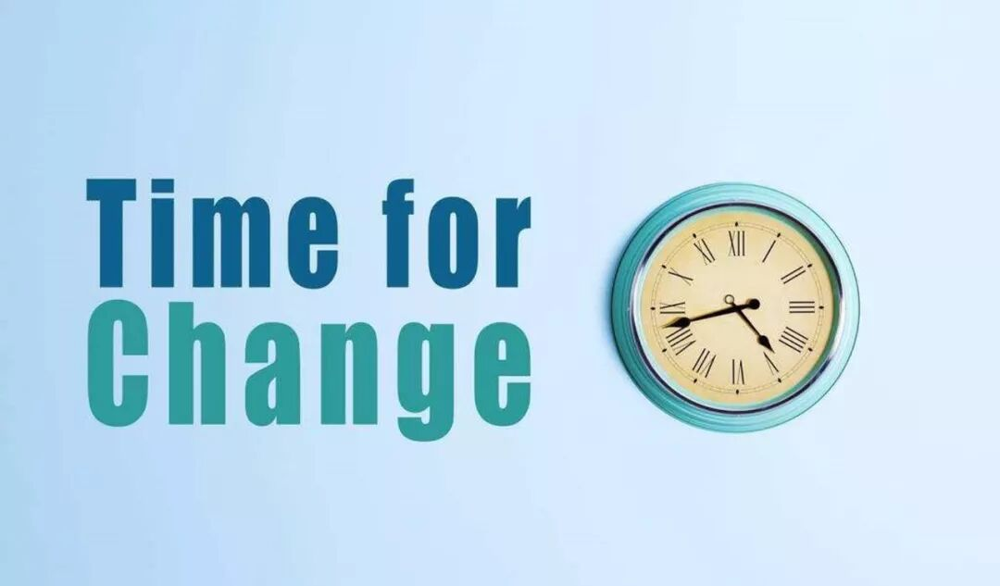
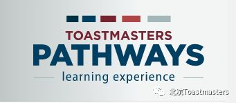

Time: 19:30-21:30, Friday, 9th March
Venue: Room A215, New Main Building, Beihang University
Table topic
Theme: Change
Table Topics Master: Frank

A new semester has started！No matter how frustrated you used to be in the past, it doesn't mean you could not win in the furture! A new semester means a new start and also a chance to change ourself.let us start our new journey of change and welcome this valuable semester with our biggest enthusiasm!
Prepared speech
Speaker: Sarah Zhu
Theme: Introduction of New Pathways

Continue your journey of personal and professional development through Pathways--Toastmasters’new education program! As the foundation of your Toastmasters experience, Pathways is designed to help you build the competencies you need to communicate and lead.
It is a great honor to invite Sarah Zhu to give us a introduction of pathways,let us look forward to her wonderful speech !

BeihangToastmasters Club is a students' union. At the same time, we belong to a non-profit international organization calledToastmasters International.
Toastmasters International (TI) is a non-profit educational organization that operates clubs worldwide for the purpose of helping members improve their communication, public speaking, and leadership skills.You can find us by the following map of Beihang University.

https://mp.weixin.qq.com/s/HYVn6aBEbp-lAgOV47mUSA
本页为抢救式本地归档，图文已永久保存。